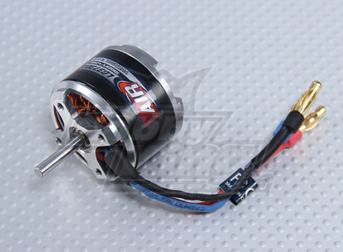

Project Aim:
To model an assembly consisting of multiple diffrent components.
Software:
- CATIA V5
Reasearch & Challenges
When planning this assembly my main focus was modelling all the internal components that make up the motor. I had bought an electric motor online and used it to get some reference photos. From this, I could get a real look at the geometry as some of the features were no simple to model. The components in the assembly included:
- Base Cap
- Stator
- Axel Shaft
- Bearing
- C-Clip
- Outer Case
The refrence model that I had used was:
DC Motor Model
The main challenge that I had faced when modelling this assembly was the stator. This was difficult as I had to create my datum plane in which to work off. Furthermore, I used the sweep function in CATIA by sketching the path and the profile.


Final CAD Model: